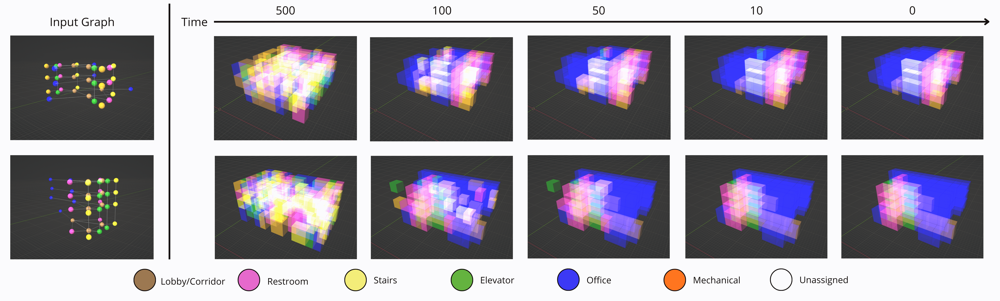

Abstract

Diffusion models have recently achieved remarkable success in continuous domains such as images and videos, yet applying them to discrete and structured data like graphs remains challenging. We propose Building-Diffusion, a conditional discrete diffusion model for node-attribute generation in architectural building layout graphs. The method follows a two-stage pipeline: first, a self-supervised model encodes the input program graph (Gp) into a compact embedding; then, a discrete denoising network learns to iteratively recover clean voxel labels from categorical noise while keeping the graph structure fixed. This design allows the model to capture categorical node distributions and preserve topological consistency. Experiments on the BuildingGAN dataset demonstrate that Building-Diffusion produces layouts that are both realistic and structurally coherent. We further validate our approach through a user study and quantitative evaluations using three metrics. These results highlight discrete diffusion as a promising framework for graph-based generative modeling. Code and pretrained models will be released at: https://github.com/Sehaba95/building_diffusion.